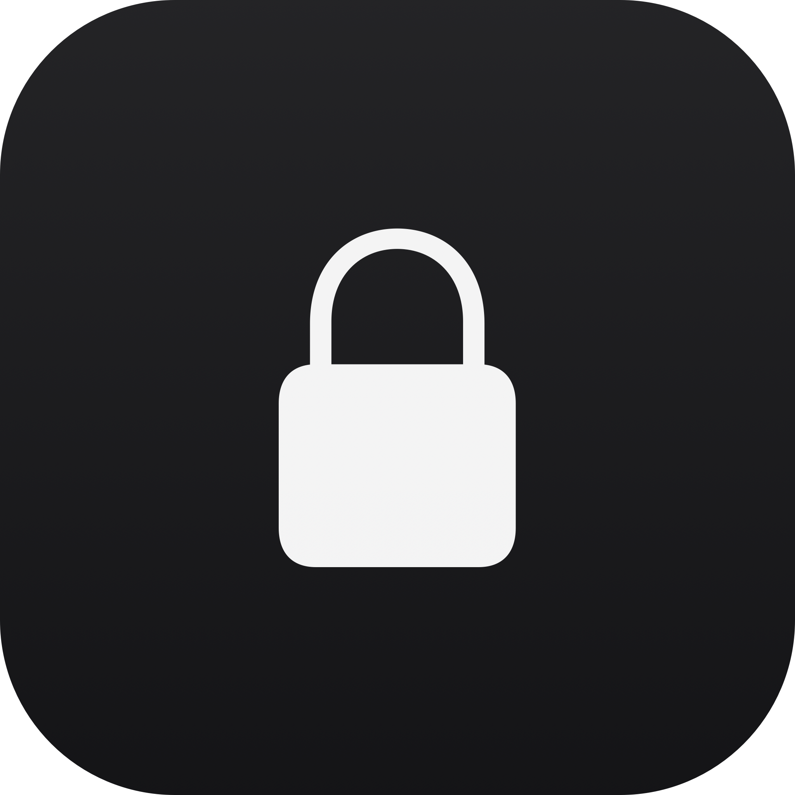
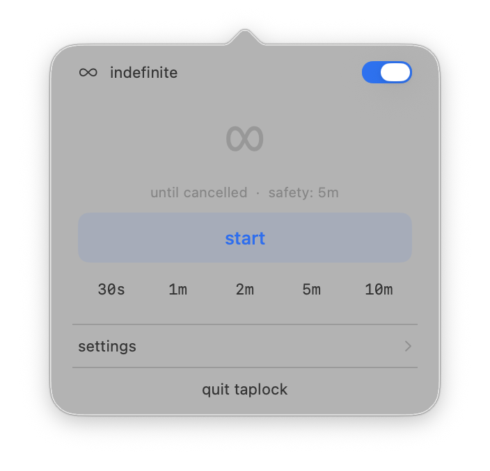
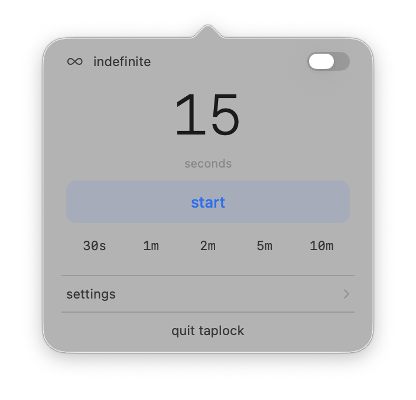
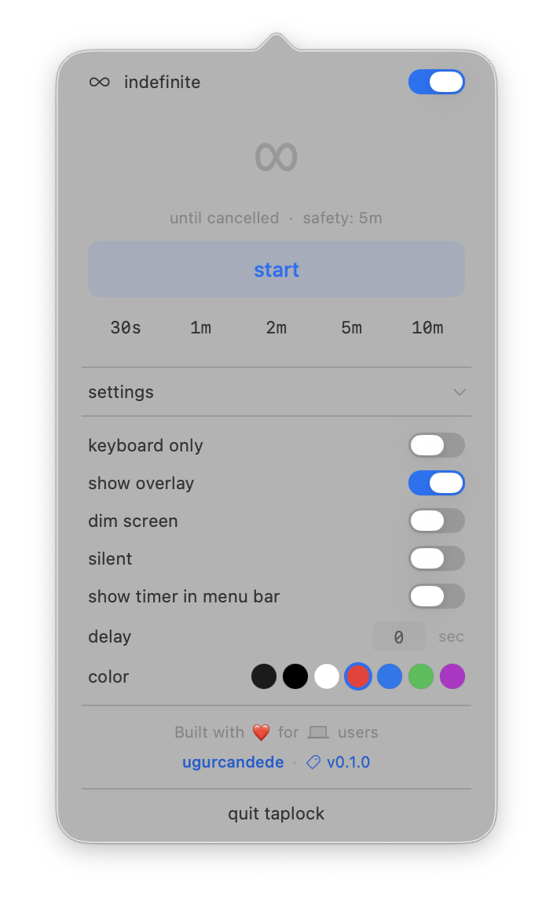
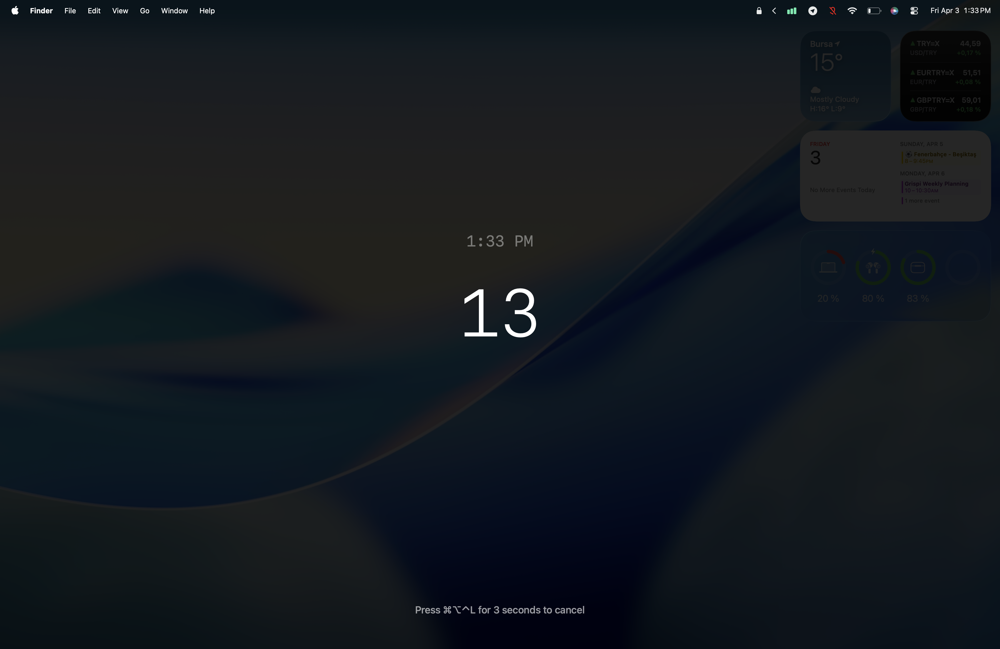

TapLock
Temporarily disable keyboard and trackpad input on your Mac. No root required.
brew tap ugurcandede/taplock
brew install taplock # CLI
brew install --cask taplock-app # Menu bar app
Features
Input Blocking
Block keyboard, trackpad, and mouse via CGEvent tap at system level.
Countdown Overlay
Full-screen timer with current clock display. Customizable background color.
Flexible Duration
Set seconds, minutes, or lock indefinitely with 5-minute safety auto-unlock.
Screen Dimming
Reduce brightness to minimum during lock. Automatically restores on unlock.
Sound Feedback
Audio cues on lock start and end. Silent mode available.
Emergency Cancel
Hold ⌘⌥⌃L for 3 seconds to cancel any time — always works.
Screenshots




Full-screen countdown overlay during active lock
Two Ways to Use
CLI
Power user friendly. Full control from the terminal with all options and flags.
taplock 30 --dim --color black
Menu Bar App
Click, set, lock. Presets, custom input, settings — all from the menu bar.
Requirements
macOS 13.0 (Ventura) or later · Apple Silicon or Intel · Accessibility permission